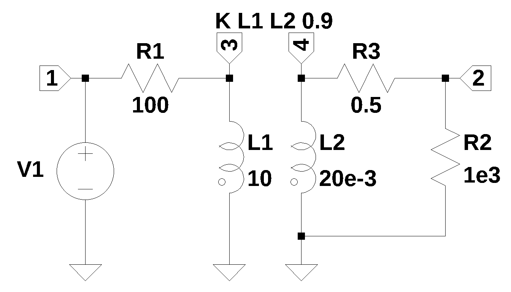

from sympy import *
import numpy as np
from tabulate import tabulate
from scipy import signal
import matplotlib.pyplot as plt
import pandas as pd
import SymMNA
from IPython.display import display, Markdown, Math, Latex
init_printing()9 Mutual Inductance
Mutual inductance is an electromagnetic phenomenon that quantifies the degree to which a time varying electric current in one coil induces a voltage in another coil through the interaction of their magnetic fields. This effect, often termed mutual induction, arises because the changing current in the first coil generates a magnetic flux, some fraction of which links with the turns of the second coil. The magnitude of mutual inductance depends entirely on the geometric arrangement of the two coils, including their relative orientation, distance, size, number of turns, and the magnetic permeability of the medium between them. It is the fundamental operating principle behind transformers and various other coupled circuits used for intentional energy transfer or signal coupling. The SI unit is the Henry (H).
A coupled inductor has two or more windings that are connected by a magnetic circuit. Coupled inductors transfer energy from one winding to a different winding usually through a commonly used core. The efficiency of the magnetic coupling between both the windings is defined by the coupling factor k or by mutual inductance.
The Dot Convention is a graphical method used to indicate on electrical schematics to indicate the polarity of the voltage induced by mutual inductance when writing Kirchhoff’s Voltage Law (KVL) equations. The convention uses a small dot placed at one terminal of each coupled coil. The placement of the dot indicates the relative direction of the windings around the core. If a current \(i_1\) enters the dotted terminal of one coil, it induces a voltage in the second coil \(v_2\) that is positive at the dotted terminal of the second coil.
9.1 Coupling Coefficient
The coupling coefficient, \(K\), is a dimensionless value between 0 and 1 that quantifies the fraction of magnetic flux from one winding that links the other and is typically measured indirectly through inductance measurements. The most common and accurate method involves using an LCR meter to measure two specific inductance values on a winding (e.g., the primary, \(L_p\)): the open-circuit inductance (\(L_{open}\)), which is the self-inductance of the primary winding with the secondary winding open-circuited, and the short-circuit inductance (\(L_{short}\)), which is the inductance measured across the primary when the secondary winding is short-circuited. The short-circuit inductance represents the leakage inductance (\(L_{leak}\)) seen from the primary side. The coupling coefficient is then calculated using the formula: \(k = \sqrt{1 - \frac{L_{short}}{L_{open}}}\). This technique leverages the fact that perfect coupling (\(k=1\)) would result in zero leakage and therefore zero short-circuit inductance, whereas poor coupling (\(k \ll 1\)) results in \(L_{short}\) approaching \(L_{open}\).
The coupling constant and the mutual inductance are related by the equation:
\(k = \frac {M}{\sqrt{L_1 \times L_2}}\)
Where k is the coupling coefficient and in spice the value of k can be from -1 to +1 to account for a negative phase relation. Phase dots are drawn on the schematic to indicate the relative direction of the windings. In LTspice the phase dots are associated with the negative terminal of the winding.
The following models are used in the chapter.
The functions polar2rec and rec2polar perform conversion between rectangular notation and magnitude and phase notation.
def polar2rec(mag, ang, units='deg'):
''' polar to rectangular conversion
mag: float
magnitude of the time invarient sinusudial signal
ang: float
the angle of the time invarient sinusudial signal
units: string
if units is set to deg, and is in degrees not radians
returns: complex
rectangular corrdinates of voltage vector
'''
if units == 'deg':
ang = ang * np.pi / 180
return mag * np.exp(1j * ang)
def rec2polar(value):
'''rectangular to polar conversion
value: complex float
returns:
magnitude, phase (in degrees)
'''
return float(abs(value)), float(arg(value)*180/np.pi)9.2 Test Circuits
Add circuits to illustrate the concepts above.
- basic circuit to illustrate calculation of \(M\) from \(K\) and measured values
- transformer circuit where turns ratio is specified (\(N1\) and \(N2\) or \(1:2\))
9.3 Example Circuit 1
The circuit shown in Figure 9.1 …
In this example mutual inductance is examined.

The netlist generated by LTSpice is pasted into the cell below and some edits were made to remove the inductor series resistance and the independent sources are set to their DC values. The componet values are set to 1 for now. Later the phasor quantities will be substituted.
net_list = '''
V1 1 0 1
R1 3 1 1
R2 2 0 1
L1 3 0 1
L2 2 0 1
R3 3 0 1
K L1 L2 1
'''The network equations are generated from the netlist and displayed below.
report, network_df, df2, A, X, Z = SymMNA.smna(net_list)
# Put matricies into SymPy
X = Matrix(X)
Z = Matrix(Z)
NE_sym = Eq(A*X,Z)
# generate markdown text to display the network equations.
temp = ''
for i in range(len(X)):
temp += '${:s}$<br>'.format(latex(Eq((A*X)[i:i+1][0],Z[i])))
Markdown(temp)\(I_{V1} + \frac{v_{1}}{R_{1}} - \frac{v_{3}}{R_{1}} = 0\)
\(I_{L2} + \frac{v_{2}}{R_{2}} = 0\)
\(I_{L1} + v_{3} \cdot \left(\frac{1}{R_{3}} + \frac{1}{R_{1}}\right) - \frac{v_{1}}{R_{1}} = 0\)
\(v_{1} = V_{1}\)
\(- I_{L1} L_{1} s - I_{L2} M s + v_{3} = 0\)
\(- I_{L1} M s - I_{L2} L_{2} s + v_{2} = 0\)
The sysmbols generated by the Python code are extraced by the SymPy function free_symbols and then declared as SymPy variables. Then the equations are solved and the results are displayed.
# turn the free symbols into SymPy variables
var(str(NE_sym.free_symbols).replace('{','').replace('}',''))
# The newtork equations can be solved symbolically.
U_sym = solve(NE_sym,X)
# display the symbolic solution
temp = ''
for i in U_sym.keys():
temp += '${:s} = {:s}$<br>'.format(latex(i),latex(U_sym[i]))
Markdown(temp)\(v_{1} = V_{1}\)
\(v_{2} = \frac{M R_{2} R_{3} V_{1} s}{L_{1} L_{2} R_{1} s^{2} + L_{1} L_{2} R_{3} s^{2} + L_{1} R_{1} R_{2} s + L_{1} R_{2} R_{3} s + L_{2} R_{1} R_{3} s - M^{2} R_{1} s^{2} - M^{2} R_{3} s^{2} + R_{1} R_{2} R_{3}}\)
\(v_{3} = \frac{L_{1} L_{2} R_{3} V_{1} s^{2} + L_{1} R_{2} R_{3} V_{1} s - M^{2} R_{3} V_{1} s^{2}}{L_{1} L_{2} R_{1} s^{2} + L_{1} L_{2} R_{3} s^{2} + L_{1} R_{1} R_{2} s + L_{1} R_{2} R_{3} s + L_{2} R_{1} R_{3} s - M^{2} R_{1} s^{2} - M^{2} R_{3} s^{2} + R_{1} R_{2} R_{3}}\)
\(I_{V1} = \frac{- L_{1} L_{2} V_{1} s^{2} - L_{1} R_{2} V_{1} s - L_{2} R_{3} V_{1} s + M^{2} V_{1} s^{2} - R_{2} R_{3} V_{1}}{L_{1} L_{2} R_{1} s^{2} + L_{1} L_{2} R_{3} s^{2} + L_{1} R_{1} R_{2} s + L_{1} R_{2} R_{3} s + L_{2} R_{1} R_{3} s - M^{2} R_{1} s^{2} - M^{2} R_{3} s^{2} + R_{1} R_{2} R_{3}}\)
\(I_{L1} = \frac{L_{2} R_{3} V_{1} s + R_{2} R_{3} V_{1}}{L_{1} L_{2} R_{1} s^{2} + L_{1} L_{2} R_{3} s^{2} + L_{1} R_{1} R_{2} s + L_{1} R_{2} R_{3} s + L_{2} R_{1} R_{3} s - M^{2} R_{1} s^{2} - M^{2} R_{3} s^{2} + R_{1} R_{2} R_{3}}\)
\(I_{L2} = - \frac{M R_{3} V_{1} s}{L_{1} L_{2} R_{1} s^{2} + L_{1} L_{2} R_{3} s^{2} + L_{1} R_{1} R_{2} s + L_{1} R_{2} R_{3} s + L_{2} R_{1} R_{3} s - M^{2} R_{1} s^{2} - M^{2} R_{3} s^{2} + R_{1} R_{2} R_{3}}\)
Since \(L1\) and \(L2\) have been declared as being linked magnetically by the SPICE statement, K L1 L2 1, the mutual coupling is accounted for by the variable \(M\) which must be calculated as shown below.
# a dictionary is created for the element values and the numerical values are assigned.
element_values = SymMNA.get_part_values(network_df)
element_values[V1] = polar2rec(10, 0, units='deg')
element_values[R1] = 10
element_values[R2] = 4+4j
element_values[R3] = 6-8j9.3.1 Mutual inductance
In Figure 9.1, the all values shown in the schematic have been entered as “1”, so the values used in the calculations are now assigned. In the netlist, K1 L1 L2 1 specifies that L1 and L2 are connected by a magnetic circuit. If \(K\) was specified we would calculate the value of \(M\).
In this example, let’s assume the inductance is across \(L_1\) is measured when \(L_2\) is shorted and open; and the inductance of \(L_2\) is measured when \(L1\) is open. The measured values are recorded below and the transformer coupling coefficient, \(K_{meas}\) is calculated from the measurments.
L1_open = 3
L1_short = 2
L2_open = 2
K_meas = sqrt(1-L1_short/L1_open)
print(f'K_meas={K_meas:0.3f}')K_meas=0.577The measured inductance values and the calculated value for \(K\) is inserted into the Python dictionary which holds the numeric element values.
element_values[L1] = L1_open
element_values[L2] = L2_openBelow, \(M\) is calculated and added to the element value dictionary.
K = symbols('K')
element_values[K] = K_meas
# calculate the coupling constant from the mutual inductance
element_values[M] = element_values[K]*np.sqrt(element_values[L1] *element_values[L2])
print('mutual inductance, M1 = {:.9f}'.format(element_values[M]))mutual inductance, M1 = 1.414213562Display the equations for \(\omega=1\).
freq = 1 # Hz
omega = 2*np.pi*freqNE = NE_sym.subs(element_values)
NE = NE.subs({s:1j*omega})temp = ''
for i in range(shape(NE.lhs)[0]):
temp += '${:s} = {:s}$<br>'.format(latex(NE.rhs[i]),latex(NE.lhs[i]))
Markdown(temp)\(0 = I_{V1} + \frac{v_{1}}{10} - \frac{v_{3}}{10}\)
\(0 = I_{L2} + 0.03125 v_{2} \cdot \left(4.0 - 4.0 i\right)\)
\(0 = I_{L1} - \frac{v_{1}}{10} + v_{3} \cdot \left(\frac{1}{10} + 0.01 \cdot \left(6.0 + 8.0 i\right)\right)\)
\(10.0 = v_{1}\)
\(0 = - 18.8495559215388 i I_{L1} - 8.88576587631673 i I_{L2} + v_{3}\)
\(0 = - 8.88576587631673 i I_{L1} - 12.5663706143592 i I_{L2} + v_{2}\)
Solve the network equations and display the results.
U = solve(NE,X)
table_header = ['unknown', 'mag','phase, deg']
table_row = []
for name, value in U.items():
table_row.append([str(name),float(abs(value)),float(arg(value)*180/np.pi)])
print(tabulate(table_row, headers=table_header,colalign = ('left','decimal','decimal'),tablefmt="simple",floatfmt=('5s','.6f','.6f')))unknown mag phase, deg
--------- --------- ------------
v1 10.000000 0.000000
v2 1.237956 -30.793053
v3 6.038688 -3.702067
I_V1 0.399300 -174.396256
I_L1 0.419727 -89.367478
I_L2 0.218842 104.2069479.4 Example Circuit 2
The circuit shown in …
9.5 Summary
Comments …